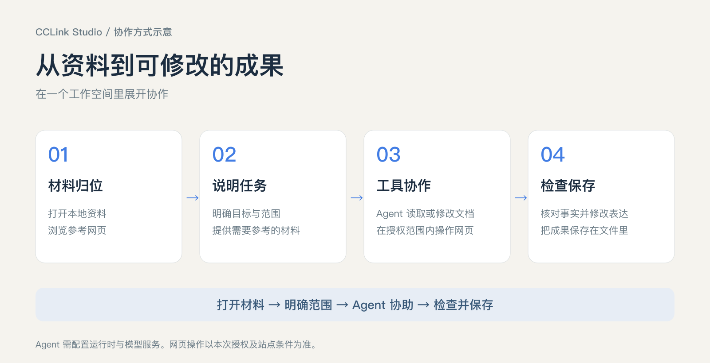
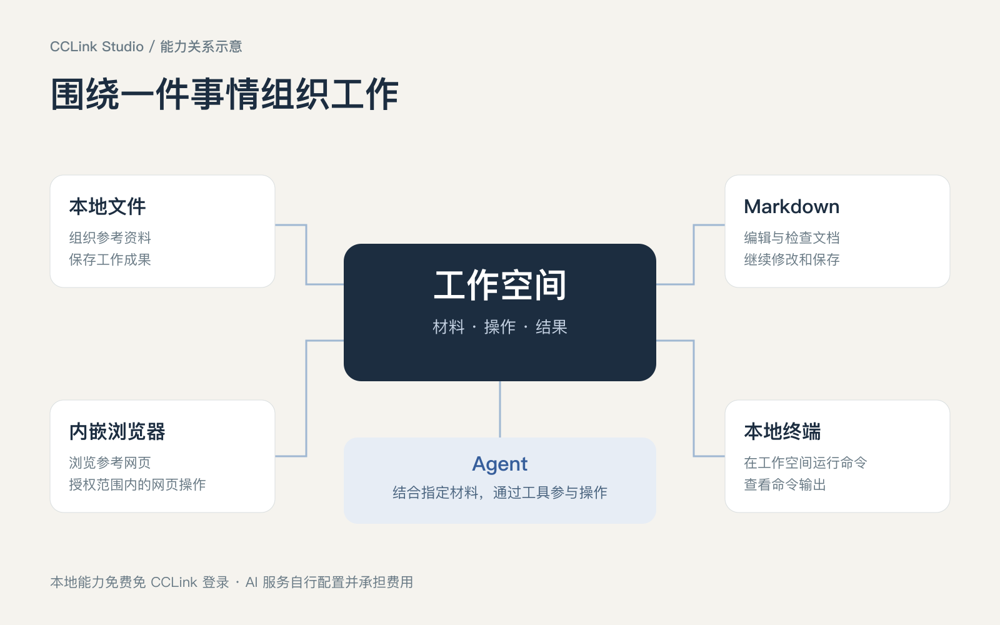
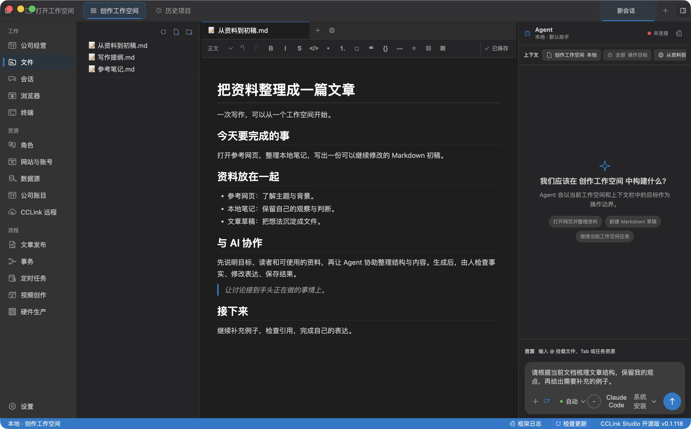

CCLINK STUDIO / PRESS MATERIALS
项目宣传图文资料
围绕同一个产品定位，按公众号、开源社区、官网和社交媒体逐个整理。每版都有独立正文、实际配图和本地排版预览。
4 套渠道文案真实应用截图可编辑 SVG 配图本地文件完整保存


共用图片与社交图卡
真实截图使用原创演示材料，保留实际界面状态。示意图说明协作方式，Agent 指令停留在待发送状态。

横版封面
1600 × 900
保存图片


协作流程示意
1600 × 820
保存图片


工作空间关系示意
1600 × 1000
保存图片


真实文档界面
演示文档与待发送指令
保存图片

真实内嵌浏览器
原创演示网页
保存图片

社交媒体竖版图卡
1080 × 1440
保存图片
继续梳理
公众号与开源社区版已逐段精修并保留初稿对照，官网和社交媒体版仍为初稿。材料均在本地保存，尚未公开发布。